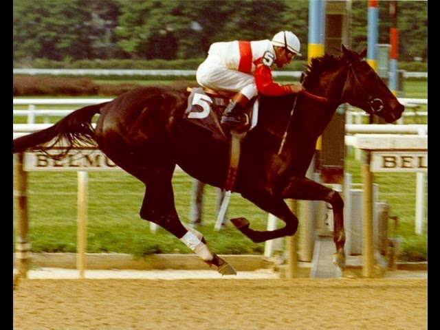
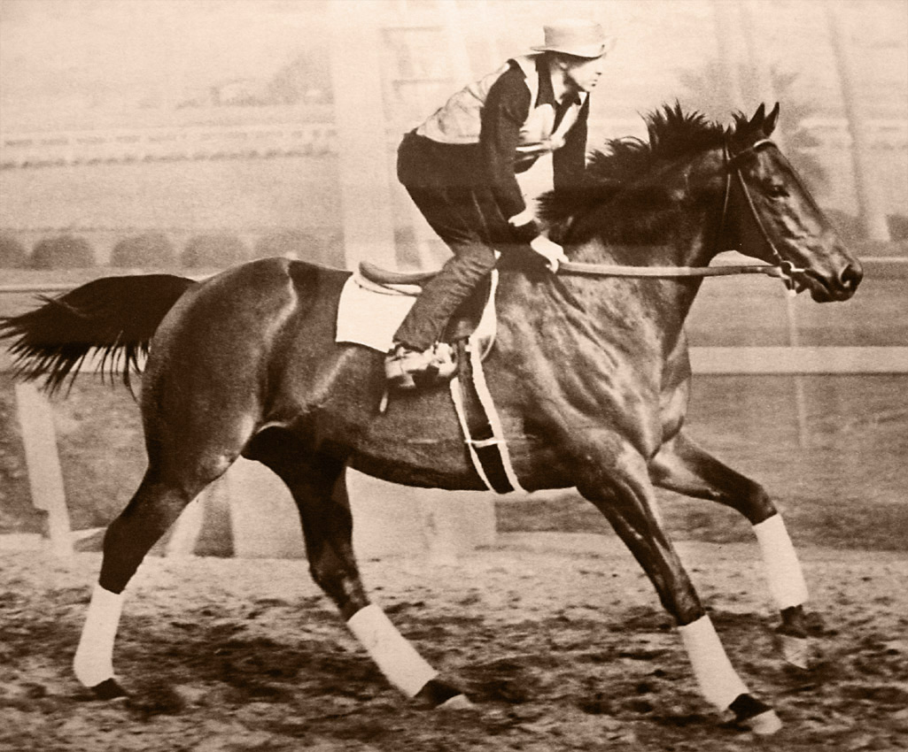

RUFFIAN
Ruffian to wręcz legendarna skarogniada klacz pełnej krwii. Żyła w latach 1972-1975, jednak pomimo swojej krótkiej działalności zdołała podbić amerykańskie tory, a słuch po niej do dzisiaj nie zaginął. Jest uważana do dzisiaj za jednego z najszybszych koni w historii. W 2007 roku na podstawie jej życiorysu powstał film opisujący jej dokonania. Jako trzylatka wygrała 5 wyścigów (czyli wszystkie w jakich startowała). W pewnym momencie jednak w jej tylnej kończynie wykryto pęknięcia i musiała zrobić sobie kilkumiesięczną przerwę. Po powrocie nadal zajmowała pierwsze miejsca, ścigając się z samymi klaczami. Następnie stanęła do walki z ogierem Foolish Pleasure, mimo że trener był temu przeciwny. Jeździec dosiadający Ruffian – Jacinto Vasquez – miał dylemat, ponieważ jeździł również na Foolish Pleasure, ale wybrał Ruffian.W trakcie klacz wyścigu złamała przednią kończynę w dwóch kościach trzeszczkowych, jednak biegła dalej jeszcze 45–46 metrów. Po kilku sekundach po wypadku jej kopyto zwisało bezwładnie na kliku ścięgnach. Po dwunastogodzinnej operacji założono jej gips. Gdy działanie narkozy ustało, zaczęła galopować i wierzgać. Gipsem złamała drugą nogę. Niedługo potem podjęto decyzję o eutanazji. Pochowana została wewnątrz toru w Belmont Park, gdzie zdobyła swe pierwsze zwycięstwo. Jako jedyny koń, została pochowana na torze, chrapami w stronę linii mety. Jej głowa miała triumfalnie ją przekroczyć. |
 |
SEABISCUIT
Seabiscuit to ogier pełnej krwi. Żył w latach 1933-1947. Podczas gonitw był niepokonany pomimo swojego niskiego wzrostu (157 cm w kłębie, dla porównania Secretariat miał 168 cm). Urodził się na farmie Claiborne w Kentucky. Był niewymiarowy, jego nogi wyglądały jak po ciężkiej chorobie, niezwykle dużo jadł i spał (w pozycji leżącej) całymi godzinami. Te cechy nie zapowiadały w najmniejszym stopniu jego kariery sportowej jako konia wyścigowego. 1 listopada 1938 roku Seabiscuit zmierzył się w pojedynku z uznawanym za najlepszego konia w Ameryce War Admiralem. Gonitwę tę nazwano wyścigiem stulecia, a na torze Pimlico Race Course zjawiło się tego dnia 40 tysięcy widzów. Nieoczekiwanie zdecydowane zwycięstwo odniósł Seabiscuit, którego dosiadał w tej gonitwie, zastępujący kontuzjowanego wówczas Pollarda George Wolf. Zwycięstwo to zaważyło o przyznaniu popularnemu Biscuitowi miana Konia Roku 1938. Historia konia została pokazana w filmach The Story of Seabiscuit z 1949 roku oraz w filmie Niepokonany Seabiscuit z 2003 roku. |
 |